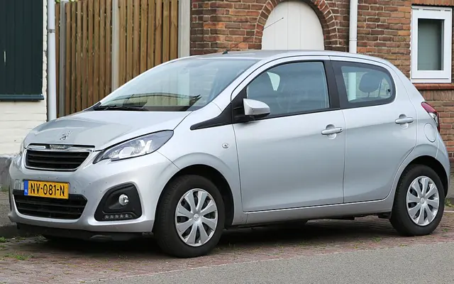

Par Motor › Precios por modelo › Peugeot 108
Precio de segunda mano · noviembre de 2026¿Cuánto vale un Peugeot 108 de segunda mano?

Precio justo estimado de un Peugeot 108 usado en España, año por año, con los kilómetros normales para su edad y en buen estado: de 3.000 € a 8.500 €. Para tasar el tuyo con sus kilómetros reales y su estado, usa el tasador gratis.
Precios del Peugeot 108 por año
107 (2005–2014)
Precio de nuevo: 1.0 68 CV, 9.500 € · 1.4 HDi 54 CV, 11.000 €
| Año | Km normales | 1.0 68 CV · Gasolina | 1.4 HDi 54 CV · Diésel |
|---|---|---|---|
| 2014 | 100.000 km | 5.000 € | 5.700 € |
| 2013 | 100.000 km | 4.800 € | 5.400 € |
| 2012 | 100.000 km | 4.500 € | 5.100 € |
| 2011 | 100.000 km | 4.300 € | 4.800 € |
| 2010 | 100.000 km | 4.000 € | 4.500 € |
| 2009 | 100.000 km | 3.800 € | 4.200 € |
| 2008 | 100.000 km | 3.600 € | 4.000 € |
| 2007 | 100.000 km | 3.300 € | 3.800 € |
| 2006 | 100.000 km | 3.100 € | 3.500 € |
| 2005 | 100.000 km | 3.000 € | 3.300 € |
108 (2014–2021)
Precio de nuevo: 1.0 72 CV, 11.000 € · 1.2 PureTech 82 CV, 12.500 €
| Año | Km normales | 1.0 72 CV · Gasolina | 1.2 PureTech 82 CV · Gasolina |
|---|---|---|---|
| 2021 | 80.000 km | 7.500 € | 8.500 € |
| 2020 | 95.000 km | 6.600 € | 7.500 € |
| 2019 | 100.000 km | 6.300 € | 7.200 € |
| 2018 | 100.000 km | 6.200 € | 7.100 € |
| 2017 | 100.000 km | 6.200 € | 7.000 € |
| 2016 | 100.000 km | 6.100 € | 6.900 € |
| 2015 | 100.000 km | 6.000 € | 6.800 € |
| 2014 | 100.000 km | 5.800 € | 6.600 € |
La correa de distribución va bañada en aceite y se degrada antes de tiempo: suelta restos que tapan el filtro de la bomba de aceite y el motor se queda sin engrase, con rotura del motor. También suele consumir mucho aceite y puede fallar la bomba de vacío del freno. Stellantis ha ampliado la cobertura de esta avería para muchas unidades (pregunta en un concesionario con el número de bastidor). Si lo compras, pide las facturas del cambio de correa y de los cambios de aceite con el aceite correcto, y vigila el nivel.
Kilómetros normales: 15.000 al año en gasolina, híbridos y eléctricos, y 20.000 en diésel, con un máximo de 100.000 km (por encima no tasamos: el precio depende demasiado del historial de cada coche). Cifras redondeadas a 100 €.
Preguntas frecuentes
¿Cuánto vale un Peugeot 108 de segunda mano?
Según el año, la versión y los kilómetros, un Peugeot 108 usado vale hoy de 3.000 € a 8.500 € en España. El más barato de nuestra tabla es un 1.0 de 2005 (3.000 €) y el más caro un 1.2 PureTech de 2021 (8.500 €). Son precios justos estimados entre particulares y profesionales, con los kilómetros normales para su edad y en buen estado.
¿Cuánto valor pierde un Peugeot 108 al año?
Con unos años encima, un Peugeot 108 pierde alrededor de un 2 % de su valor cada año (calculado sobre el 1.0 de la generación 108). Los primeros años la caída es mayor y a partir de los 70.000 km se acelera.
¿Qué motorizaciones tiene el Peugeot 108?
En nuestra base de datos hay versiones gasolina y diésel, en 2 generaciónes: 107 y 108.
¿Qué motores del Peugeot 108 dan problemas?
Ojo con el 1.2 PureTech (correa bañada en aceite) (1.2 PureTech, 2014–2021): son motores con fallos graves y muy extendidos. Antes de comprar uno, pide el historial de mantenimiento y comprueba si ya se hizo la reparación. El resto de motores no tiene problemas fuera de lo normal.
¿Cómo sé si me piden demasiado por un Peugeot 108?
Abre el tasador de Par Motor, elige el Peugeot 108, el año y los kilómetros reales, y escribe lo que te piden. Te diremos si está por debajo del precio justo (chollo) o por encima (caro). Es gratis y no pide registro ni matrícula.
Otros Peugeot
Compara su coste real
El precio de compra es solo una parte. Mira cuánto te costaría al mes con combustible, seguro, neumáticos, mantenimiento y lo que pierde de valor.
Abrir el comparador →